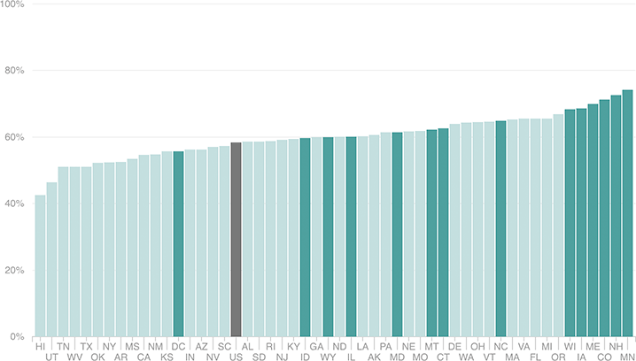

Many Of The Highest-Turnout States Also Offered Same-Day Registration
States with same-day registration in place this year also often had turnout totals well above the national rate (as measured by the share of the voting-eligible population who voted).

Notes
There was same-day registration in North Carolina during early voting this year, but not on Election Day itself.